綜合大獎
General
6 個獎項年度製作
Record Of The Year

Man I Need
Olivia Dean
製作名單
Zach Nahome, producer; Charlie Holmes & Zach Nahome, engineers/mixers; Simon Francis, mastering engineer
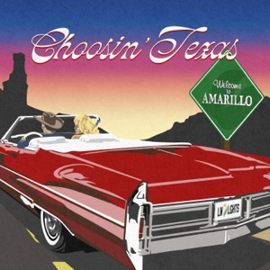
Choosin' Texas
Ella Langley
製作名單
Miranda Lambert, Ella Langley & Ben West, producers; Dave Clauss & Ben West, engineers/mixers; Pete Lyman, mastering engineer

I Just Might
Bruno Mars
製作名單
D’Mile & Bruno Mars, producers; Bryce Bordone, Serban Ghenea, Anthony Masino, Charles Moniz & Gabriel Roth, engineers/mixers; Randy Merrill, mastering engineer

WHERE IS MY HUSBAND!
RAYE
製作名單
Rachel Keen & Mike Sabath, producers; Tony Maserati, Rachel Keen, Hal Ritson & Alex Robinson, engineers/mixers; Mike Hillier, mastering engineer
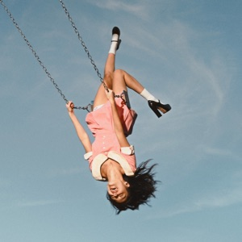
the cure
Olivia Rodrigo
製作名單
Daniel Nigro, producer; Chris Kasych, Mitch McCarthy & Daniel Nigro, engineers/mixers; Mike Bozzi, mastering engineer
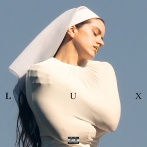
Berghain
ROSALÍA, Björk, Yves Tumor
製作名單
Noah Goldstein, Jake Miller, David Rodríguez, ROSALÍA & Dylan Wiggins, producers; Daniel Cayotte, Isaac Diskin, Tristan Hoogland, Manny Marroquin, Jake Miller, Billy Ray, David Rodríguez, Marta Salogni, Bergur Thorisson & Harry Wilson, engineers/mixers; Bob Jackson & Brian Lee, mastering engineers

The Fate of Ophelia
Taylor Swift
製作名單
Max Martin, Shellback & Taylor Swift, producers; Serban Ghenea & Lasse Mårtén, engineers/mixers; Randy Merrill, mastering engineer

Dracula
Tame Impala, JENNIE
製作名單
Sarah Aarons & Kevin Parker, producers; Eric J. Dubowsky, Jung Eun-kyung & Kevin Parker, engineers/mixers; Matt Colton, mastering engineer
年度專輯
Album Of The Year
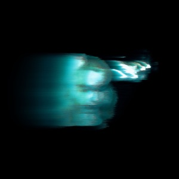
Lost Weekend
Phoebe Bridgers
製作名單
Jack Antonoff, Tony Berg, Phoebe Bridgers & Ethan Gruska, producers; Jack Antonoff, Sam Gazarian, Cam Gilfoy, Oli Jacobs, Will Maclellan, Jack Manning, Kellie McGrew, Joey Miller, Mike Mogis, Rob Moose, Dani Perez, Laura Sisk & Greg White, engineers/mixers; Phoebe Bridgers, Bo Burnham, Christian Lee Hutson & Marshall Vore, songwriters; Ruairi O'Flaherty, mastering engineer
The Art of Loving
Olivia Dean
製作名單
Julian Bunetta, Bastian Langebæk, Zach Nahome, John Ryan & Max Wolfgang, producers; Jeff Gunnell, Charlie Holmes & Zach Nahome, engineers/mixers; Olivia Dean, Matt Hales, Bastian Langebæk & Max Wolfgang, songwriters; Simon Francis, mastering engineer

Dandelion
Ella Langley
製作名單
Austin Goodloe, Miranda Lambert, Ella Langley & Ben West, producers; Chuck Ainlay, Dave Clauss, Austin Goodloe, Mike Stankiewicz & Ben West, engineers/mixers; Ella Langley & Joybeth Taylor, songwriters; Andrew Mendelson, mastering engineer
The Romantic
Bruno Mars
製作名單
D'Mile & Bruno Mars, producers; Bryce Bordone, Jeff Chestek, Serban Ghenea, Anthony Masino, Charles Moniz & Gabriel Roth, engineers/mixers; Brody Brown, D'Mile, James Fauntleroy, Philip Lawrence & Bruno Mars, songwriters; Randy Merrill, mastering engineer
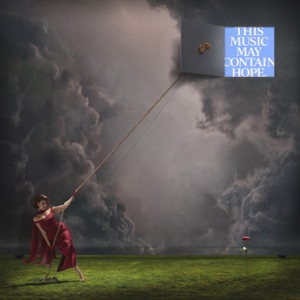
THIS MUSIC MAY CONTAIN HOPE.
RAYE
製作名單
Pete Clements, Chris Hill, Rachel Keen, Tom Richards & Mike Sabath, producers; Jon Castelli, Andrew Dudman, Tony Maserati, Rachel Keen & Alex Robinson, engineers/mixers; Graeme Blevins, Matt Brooks, Pete Clements, Augie Haas, Chris Hill, Paul Murray, Rachel Keen, Tom Richards, Mike Sabath & Oscar Stieler, songwriters; Mike Hillier, mastering engineer
you seem pretty sad for a girl so in love
Olivia Rodrigo
製作名單
Daniel Nigro, producer; Chris Kasych, Mitch McCarthy & Daniel Nigro, engineers/mixers; Amy Allen, Daniel Nigro & Olivia Rodrigo, songwriters; Mike Bozzi & Randy Merrill, mastering engineers
LUX (Complete Works)
ROSALÍA
製作名單
Noah Goldstein, Elliott Kozel, David Rodríguez, ROSALÍA & Dylan Wiggins, producers; Daniel Cayotte, Isaac Diskin, Tom Elmhirst, Tristan Hoogland, Manny Marroquin, Jake Miller, David Rodríguez & Harry Wilson, engineers/mixers; Noah Goldstein, Elliott Kozel, Jake Miller, David Rodríguez, Rosalía Vila Tobella & Dylan Wiggins, songwriters; Bob Jackson & Brian Lee, mastering engineers

The Life of a Showgirl
Taylor Swift
製作名單
Max Martin, Shellback & Taylor Swift, producers; Erik Arvinder, Willem Bleeker, Mattias Bylund, Serban Ghenea, Lasse Mårtén, Max Martin & Shellback, engineers/mixers; Max Martin, Shellback & Taylor Swift, songwriters; Randy Merrill, mastering engineer
年度歌曲
Song Of The Year
Berghain
Björk, Noah Goldstein, Jake Miller, ROSALÍA, Dylan Wiggins
製作名單
Björk Gudmundsdóttir, Noah Goldstein, Jake Miller, Rosalía Vila Tobella & Dylan Wiggins, songwriters (ROSALÍA, Björk, Yves Tumor)
Choosin' Texas
Luke Dick, Miranda Lambert, Ella Langley, Joybeth Taylor
製作名單
Luke Dick, Miranda Lambert, Ella Langley & Joybeth Taylor, songwriters (Ella Langley)
the cure
Daniel Nigro, Olivia Rodrigo
製作名單
Daniel Nigro & Olivia Rodrigo, songwriters (Olivia Rodrigo)

hate that i made you love me
Ariana Grande, Max Martin, Ilya
製作名單
Ariana Grande, Max Martin & Ilya Salmanzadeh, songwriters (Ariana Grande)
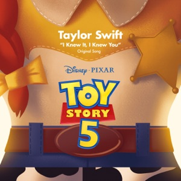
I Knew It, I Knew You (from Toy Story 5)
Jack Antonoff, Taylor Swift
製作名單
Jack Antonoff & Taylor Swift, songwriters (Taylor Swift)
Man I Need
Olivia Dean, Tobias Jesso, Jr., Zach Nahome
製作名單
Olivia Dean, Tobias Jesso Jr. & Zach Nahome, songwriters (Olivia Dean)
Risk it All
Dernst Emile II, James Fauntleroy, Philip Lawrence, Bruno Mars
製作名單
Dernst Emile II, James Fauntleroy, Philip Lawrence & Bruno Mars, songwriters (Bruno Mars)
WHERE IS MY HUSBAND!
RAYE, Mike Sabath
製作名單
Rachel Keen & Mike Sabath, songwriters (RAYE)
最佳新人
Best New Artist

Angine de Poitrine
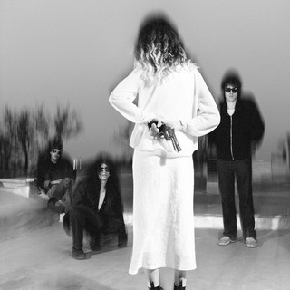
Geese

Ella Langley
Slayyyter

Sienna Spiro
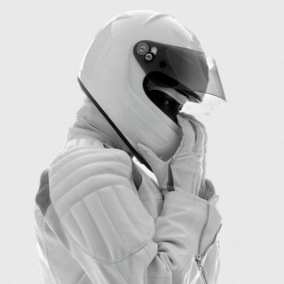
Don Toliver

Remi Wolf
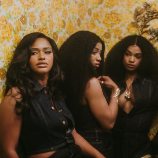
The Womack Sisters
年度製作人（非古典）
Producer Of The Year, Non-Classical
Tony Berg
製作名單
• Better Broken (Sarah McLachlan) (A)
• Homewrecker (sombr) (S)
• Indigo Park (Bruce Hornsby) (A)
• Lost Weekend (Phoebe Bridgers) (A)
• My Body Isn't Ready (sombr) (S)
• Potential (sombr) (S)Dernst Emile II
製作名單
• Reach Out (Victoria Monét) (S)
• The Romantic (Bruno Mars) (A)Noah Goldstein
製作名單
• LUX (ROSALÍA) (A)
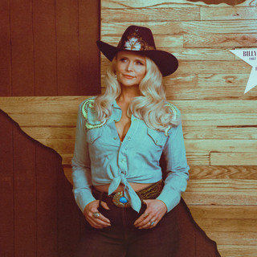
Miranda Lambert
製作名單
• Dandelion (Ella Langley) (A)

Mike Sabath
製作名單
• Beware.. The South London Lover Boy. (RAYE) (T)
• Click Clack Symphony. (RAYE Featuring Hans Zimmer) (S)
• Fields. (RAYE, Grandad Michael) (T)
• I Will Overcome. (RAYE) (T)
• Joy. (RAYE, Amma, Absolutely) (T)
• Skin & Bones. (RAYE) (T)
• The WhatsApp Shakespeare. (RAYE) (T)
• WHERE IS MY HUSBAND! (RAYE) (S)
• Winter Woman. (RAYE) (T)
年度詞曲創作者（非古典）
Songwriter Of The Year, Non-Classical

Amy Allen
製作名單
• Cry Ugly (FLO) (S)
• Dashboard (Noah Kahan) (T)
• drop dead (Olivia Rodrigo) (S)
• expectations (Olivia Rodrigo) (T)
• For Always (Ed Sheeran) (T)
• Likey Likey (Young Miko) (S)
• So Easy (To Fall In Love) (Olivia Dean) (S)
• Stupid (Megan Moroney) (T)
• Virtuoso (Ryan Beatty) (S)Edgar Barrera
製作名單
• Broke My Heart (Gracie Abrams) (T)
• Dando Vueltas (Rauw Alejandro) (S)
• Después De Ti (KAROL G & Greg Gonzalez) (S)
• For u My lova (KAROL G) (T)
• Lighter (Jelly Roll, Carín León & FIFA Sound) (S)
• Ojitos Bellos (Grupo Frontera) (S)
• Pvta Luna (Netón Vega) (S)
• 7-3 (Peso Pluma & Tito Double P) (T)
• Velas (Santana & Carín León) (S)
RAYE
製作名單
• Click Clack Symphony. (RAYE Featuring Hans Zimmer) (S)
• God Be My Witness (Amma) (T)
• I Know You're Hurting. (RAYE) (T)
• Joy. (RAYE, Amma, Absolutely) (T)
• know about me (Halle, GloRilla) (T)
• Let Me Be In Your Arms (Sonny Fodera, Libianca) (S)
• Supermarket (Say Now) (S)
• The WhatsApp Shakespeare. (RAYE) (T)
• WHERE IS MY HUSBAND! (RAYE) (S)
Joybeth Taylor
製作名單
• Choosin' Texas (Ella Langley) (S)
• Empty Words (Corey Kent) (S)
• I Can't Love You Anymore (Ella Langley, Morgan Wallen) (S)
• Winner At Losing - Landman - Songs From and Inspired by the Paramount+ Original Series (Volume II) (Gavin Adcock) (S)
Theron Thomas
製作名單
• Ain't In LA (ADÉLA) (S)
• Be Good (Buju Banton) (T)
• Champion (BLACKPINK) (T)
• Does She Know (Sekou) (T)
• Eurosummer - Girls Trip (Zara Larsson & Shakira) (T)
• FLAMED UP (JayDon) (S)
• Me and my (BLACKPINK) (T)
• Sexy Ladies (Lizzo & UCB (Uncalled 4 Band)) (T)
• Too Easy (tig3r lewis) (S)
流行與舞曲／電子
Pop & Dance/Electronic
8 個獎項最佳流行歌手演出
Best Pop Solo Performance
Man I Need
Olivia Dean
Risk It All
Bruno Mars
WHERE IS MY HUSBAND!
RAYE
the cure
Olivia Rodrigo
Sauvignon Blanc
ROSALÍA
最佳流行組合／團體演出
Best Pop Duo/Group Performance
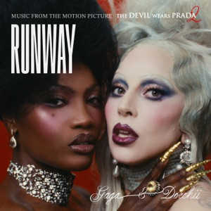
RUNWAY
Lady Gaga, Doechii

Bring Your Love
Madonna, Sabrina Carpenter
Click Clack Symphony.
RAYE, Hans Zimmer
The Life of a Showgirl
Taylor Swift, Sabrina Carpenter
Dracula
Tame Impala, JENNIE
最佳亞洲流行音樂演出
Best Asian Pop Music Performance
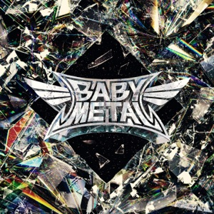
Sunset Kiss
BABYMETAL, Polyphia
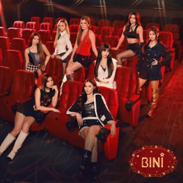
Unang Kilig
BINI

BANG BANG
IVE
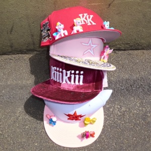
404 (New Era)
KiiiKiii

YES
LiSA

VISA
SB19
最佳流行演唱專輯
Best Pop Vocal Album
The Art of Loving
Olivia Dean
petal
Ariana Grande
The Romantic
Bruno Mars
THIS MUSIC MAY CONTAIN HOPE.
RAYE
you seem pretty sad for a girl so in love
Olivia Rodrigo
最佳舞曲／電子錄音
Best Dance/Electronic Recording
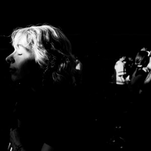
Lights Burn Dimmer
Fred Again.., (Jamie T)
製作名單
Fred again.., producer; Tom Norris, mixer
I Feel So Free
Madonna
製作名單
Madonna & Stuart Price, producers; Stuart Price, mixer

CRANK
Slayyyter
製作名單
Wyatt Bernard & Austin Corona, producers; Clint Gibbs, mixer

My Old Ways
Tame Impala
製作名單
Kevin Parker, producer; Kevin Parker, mixer
Melatonin
Tinashe
製作名單
nightfeelings, Ricky Reed & Zack Sekoff, producers; Tom Norris, mixer

Music
underscores
製作名單
underscores, producer; underscores, mixer
最佳流行舞曲錄音
Best Dance Pop Recording

Blue Moon
Zara Larsson
製作名單
Margo XS, MNEK & Zhone, producers; Tom Norris, mixer
Danceteria
Madonna
製作名單
Cirkut, Madonna, Stuart Price & Andrew Watt, producers; Stuart Price, mixer
Life Boat.
RAYE
製作名單
Punctual, Rachel Keen & Jordan Riley, producers; Jon Castelli, mixer
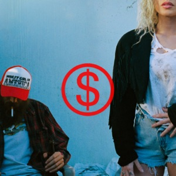
DANCE...
Slayyyter
製作名單
Valley Girl, producer; Clint Gibbs, mixer
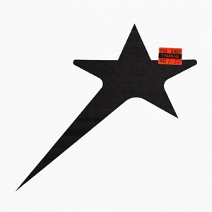
Too Easy
Tinashe
製作名單
kimj & Zack Sekoff, producers; Tom Norris, mixer
最佳舞曲／電子專輯
Best Dance/Electronic Album
CONFESSIONS II
Madonna
Sexistential
Robyn
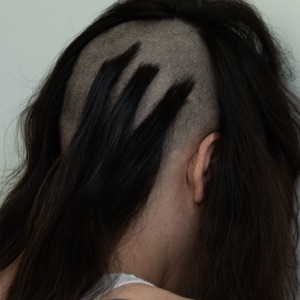
SOMA
Skrillex
WOR$T GIRL IN AMERICA
Slayyyter
Deadbeat
Tame Impala
最佳混音錄音
Best Remixed Recording

Beto's Horns (fred remix)
Fred again.., Tom Norris
製作名單
Fred again.. & Tom Norris, remixers (Fred again.., CA7RIEL & Paco Amoroso)

I Just Might (Austin Millz remix)
Austin Millz
製作名單
Austin Millz, remixer (Bruno Mars, Austin Millz)

Love Sensation
Jacques Lu Cont
製作名單
Stuart Price, remixer (Madonna & Kylie Minogue)
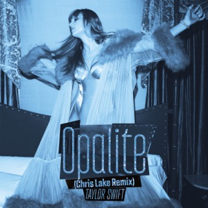
Opalite (Chris Lake Remix)
Chris Lake
製作名單
Chris Lake, remixer (Taylor Swift)

A Question of Trust - Boys Noize Remix
Boys Noize
製作名單
Boys Noize, remixer (Nine Inch Nails, Boys Noize)
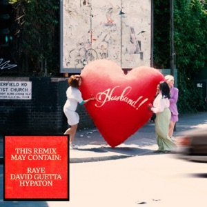
WHERE IS MY HUSBAND!
David Guetta, Hypaton
製作名單
David Guetta & Hypaton, remixers (RAYE, David Guetta, Hypaton)
搖滾、金屬與另類
Rock, Metal & Alternative Music
6 個獎項最佳搖滾演出
Best Rock Performance

Sarniezz
Angine de Poitrine
Lost Boys
Phoebe Bridgers
Trinidad
Geese

what's wrong with me
Olivia Rodrigo, Robert Smith

In The Stars
Rolling Stones
最佳金屬演出
Best Metal Performance

The Edge of Perfection
Anthrax

Hive Mind
Knocked Loose, Denzel Curry

Your Ghost Again
Mastodon
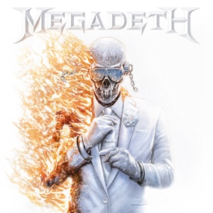
Let There Be Shred
Megadeth
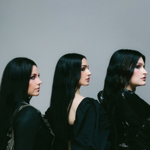
End of You
Poppy, Amy Lee, Courtney LaPlante
最佳搖滾歌曲
Best Rock Song
In The Stars
Mick Jagger, Keith Richards
製作名單
Mick Jagger & Keith Richards, songwriters (The Rolling Stones)
Lost Boys
Phoebe Bridgers, Bo Burnham, Alex G, Christian Lee Hutson, Marshall Vore
製作名單
Phoebe Bridgers, Bo Burnham, Alex G, Christian Lee Hutson & Marshall Vore, songwriters (Phoebe Bridgers)

My Only Angel
Joe Perry, Matt Schwartz, Steven Tyler, YUNGBLUD
製作名單
Joe Perry, Matt Schwartz, Steven Tyler & Dominic Harrison, songwriters (Aerosmith, YUNGBLUD)
Streets of Minneapolis - Radio Mix
Bruce Springsteen
製作名單
Bruce Springsteen, songwriter (Bruce Springsteen)
Trinidad
Max Bassin, Dominic DiGesu, Emily Green, Cameron Winter
製作名單
Max Bassin, Dominic DiGesu, Emily Green & Cameron Winter, songwriters (Geese)
what's wrong with me
Daniel Nigro, Olivia Rodrigo, Sasha Sloan
製作名單
Daniel Nigro, Olivia Rodrigo & Sasha Sloan, songwriters (Olivia Rodrigo, Robert Smith)
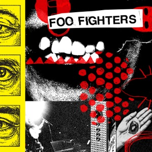
Your Favorite Toy
Foo Fighters
製作名單
Foo Fighters, songwriters (Foo Fighters)
最佳搖滾專輯
Best Rock Album
Vol.II
Angine de Poitrine
Your Favorite Toy
Foo Fighters

The Wow! Signal
Muse

Foreign Tongues
Rolling Stones
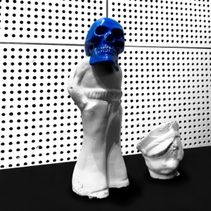
Frozen Charlotte
Jack White
最佳另類音樂演出
Best Alternative Music Performance
Fabienk
Angine de Poitrine
Kill Me
Phoebe Bridgers

Au Pays du Cocaine
Geese
Reliquia
ROSALÍA

Showbiz
Hayley Williams
最佳另類音樂專輯
Best Alternative Music Album

I Must Be Dreaming
Alabama Shakes
Lost Weekend
Phoebe Bridgers

Music, Fashion, Film
Charli XCX
Getting Killed
Geese

The Mountain
Gorillaz
LUX (Complete Works)
ROSALÍA
R&B、饒舌與詩歌朗誦
R&B, Rap & Spoken Word Poetry
11 個獎項最佳 R&B 個人演出
Best R&B Solo Performance
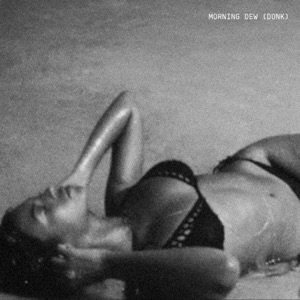
MORNING DEW (DONK)
Beyoncé Knowles

Out The Window
Kehlani
Let Me
Victoria Monét
Pressha
Jill Scott
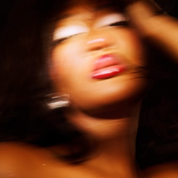
What You Need
Tems
最佳 R&B 合作／組合演出
Best R&B Collaboration or Duo/Group Performance

Fallin'
Chris Brown, Leon Thomas III
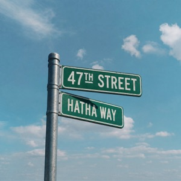
47th Street
Lalah Hathaway, J. Ivy
Sweet Nuthins
Kehlani, Leon Thomas III

Mess
PJ Morton, Keyon Harrold
To B Honest
Jill Scott, J.I.D
最佳傳統 R&B 演出
Best Traditional R&B Performance
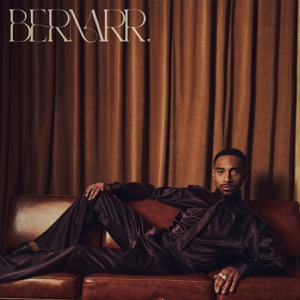
I Found Myself
Durand Bernarr
Can't Let Go
Lalah Hathaway
Beautiful People
Jill Scott

My Muse
Leon Thomas III
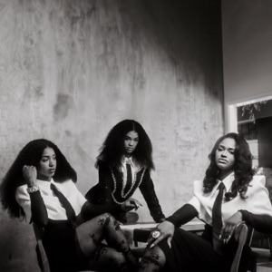
If I Let You
The Womack Sisters
最佳 R&B 歌曲
Best R&B Song
Let Me
Jahshua Brown, Darhyl "DJ" Camper, Jeff “Gitty” Gitelman, Tiyon Mack, Victoria Monét, Branden Rowell
製作名單
Jahshua Brown, Darhyl Camper, Jr., Jeff Gitelman, Tiyon Mack, Victoria Monét & Branden Rowell, songwriters (Victoria Monét)
My Muse
Lazaro Andres Camejo, Rob Gueringer, Nile Eugene Hargrove, Peter Lee Johnson, Marcus Clayton Paul, D. Phelps, Leon Thomas III
製作名單
Lazaro A. Camejo, Rob Gueringer, Nile Eugene Hargrove, Peter Lee Johnson, Marcus Clayton Paul, David Kenneth Phelps & Leon Thomas, songwriters (Leon Thomas)
Out The Window
Antonio Dixon, Kehlani, Ashton Norful, Khristopher Riddick-Tynes, Talay Riley
製作名單
Antonio Dixon, Kehlani Parrish, Ashton Norful, Khris Riddick-Tynes & Talay Riley, songwriters (Kehlani)
Pressha
Adam W. Blackstone, Jill Scott, Vincent Tolan
製作名單
Adam Blackstone, Jill Scott & Vincent Tolan, songwriters (Jill Scott)
What You Need
Guiltybeatz, Tems
製作名單
Ronald Banful & Temilade Openiyi, songwriters (Tems)
最佳前衛 R&B 專輯
Best Progressive R&B Album
BERNARR.
Durand Bernarr
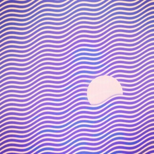
Waves
Moonchild
The Last Balloon
Tank And The Bangas
PHOLKS
Leon Thomas III
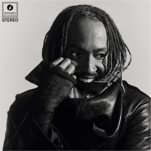
Distracted
Thundercat
最佳 R&B 專輯
Best R&B Album

BROWN (The Chocolate Edition)
Chris Brown
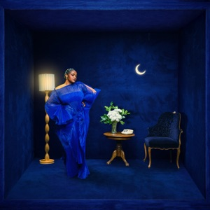
When The City Sleeps
Alex Isley
Kehlani
Kehlani
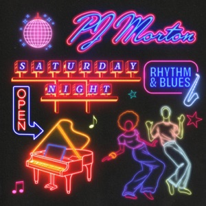
Saturday Night
PJ Morton
To Whom This May Concern
Jill Scott
最佳饒舌演出
Best Rap Performance
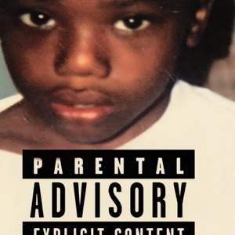
Good Flirts
Baby Keem, Kendrick Lamar, Momo Boyd

ErrTime
Cardi B

Run It Back!!
De La Soul, Nas

LET 'EM KNOW
T.I.

Body
Don Toliver
最佳旋律饒舌演出
Best Melodic Rap Performance
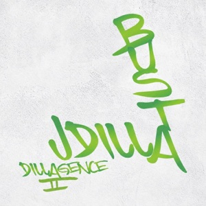
This Woman
Busta Rhymes
Safe
Cardi B, Kehlani

girl, get up.
Doechii, SZA
E85
Don Toliver
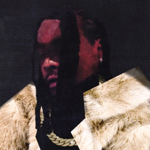
Watching Us
Wale, Leon Thomas III
最佳饒舌歌曲
Best Rap Song
E85
Derek Anderson, Aaron Paryce Cheung, Jaasu Mallory, Travis Scott, Don Toliver
製作名單
Derek Anderson, Aaron Paryce Cheung, Jaasu Mallory, Jacques Webster & Caleb Toliver, songwriters (Don Toliver)
ErrTime
Matthew Allen, Javaan Durrell Anderson, Cardi B, Ronnie Jackson, James D. Steed, Jordan Thorpe
製作名單
Matthew Allen, Javaan Durrell Anderson, Belcalis Almanzar, Ronnie Jackson, James D. Steed & Jordan Thorpe, songwriters (Cardi B)
girl, get up.
Darius Dixson, Doechii, Jahlil Gunter, SZA, Anthony "Moosa" Tiffith, A. Tiffith
製作名單
Darius Scott, Jaylah Hickmon, Jahlil Gunter, Solána Rowe, Anthony “Moosa” Tiffith Jr. & Anthony “Top Dawg” Tiffith, songwriters (Doechii Featuring SZA)
LET 'EM KNOW
T.I., Pharrell Williams
製作名單
T.I. & Pharrell Williams, songwriters (T.I.)
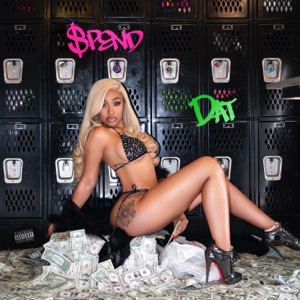
Spend Dat
Caresha Romeka Brownlee, Akil King, Maurice "Verse" Simmonds, J White Did It
製作名單
Caresha Romeka Brownlee, Akil King, Maurice Simmonds & Anthony Germaine White, songwriters (Yung Miami)
最佳饒舌專輯
Best Rap Album
DILLAGENCE II
Busta Rhymes
AM I THE DRAMA?
Cardi B
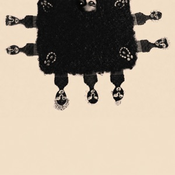
God Gotta Afro & Gold Hoops
Rapsody
OCTANE
Don Toliver
everything is a lot.
Wale

BULLY - DELUXE
Kanye West
最佳詩歌朗誦專輯
Best Spoken Word Poetry Album
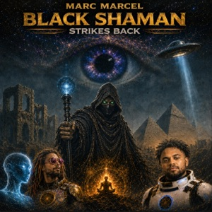
Black Shaman Strikes Back
Marc Marcel

the color of rain
Aja Monet

A Hero And A Villain
Mad Skillz

How Love Grows
Jwalt

Leap Life
Saul Williams
爵士、傳統流行、當代演奏與音樂劇
Jazz, Traditional Pop, Contemporary Instrumental & Musical Theater
10 個獎項最佳爵士演出
Best Jazz Performance
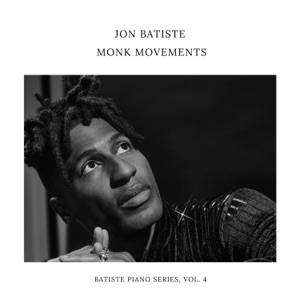
In Walked Bud
Jon Batiste

Good Life - TAMRON HALL Main Title Theme
The Baylor Project
Sophisticated Lady
Cécile McLorin Salvant, Metropole Orkest, Jules Buckley

The Lady is a Tramp
Deborah Silver, Diane Schuur

i get along without you very well (except sometimes)
Nicole Zuraitis, Christian McBride, Gilad Hekselman, Dan Pugach
最佳爵士演唱專輯
Best Jazz Vocal Album

For Dinah
Ledisi
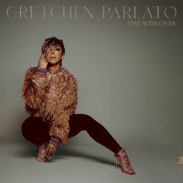
The Wise Ones
Gretchen Parlato

Live At Jazz At Lincoln Center
Catherine Russell
With Every Breath I Take
Cécile McLorin Salvant, Metropole Orkest, Jules Buckley
the devil i knew
Nicole Zuraitis
最佳爵士演奏專輯
Best Jazz Instrumental Album
Monk Movements
Jon Batiste

We Dream
Lakecia Benjamin
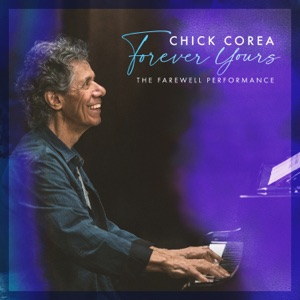
Forever Yours: The Farewell Performance (Live)
Chick Corea

Leave That In There
Sullivan Fortner

Side-Eye III+
Pat Metheny
最佳大型爵士樂團專輯
Best Large Jazz Ensemble Album

Paco de Lucía, Music for Big Band (Live)
Alex Conde
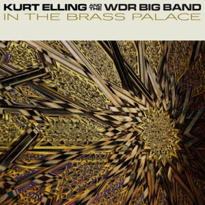
In The Brass Palace
Kurt Elling, WDR Big Band

Jim Mcneely Expeditions
Frankfurt Radio Big Band, Jim McNeely
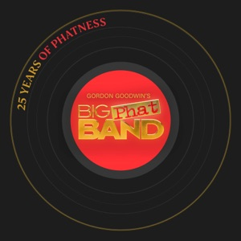
25 Years of Phatness
Gordon Goodwin's Big Phat Band, Gordon Goodwin
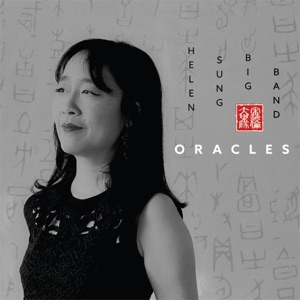
Oracles
Helen Sung
最佳拉丁爵士專輯
Best Latin Jazz Album

Filin
Melissa Aldana
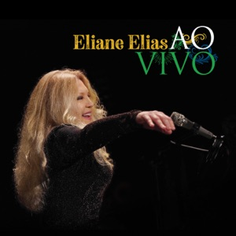
Ao Vivo (Live)
Eliane Elias

Monk Con Clave
Carlos Henriquez, Gonzalo Rubalcaba, Pedro Martinez, Anthony Almonte, Osmany Paredes, Jeremy Bosch, Robert Rodriguez
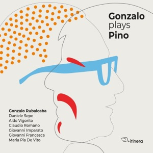
GONZALO Plays PINO
Gonzalo Rubalcaba
El Arte Del Bolero Vol. 3
Miguel Zenón, Luis Perdomo
最佳另類爵士專輯
Best Alternative Jazz Album

Trip the Night Fantastic
Terri Lyne Carrington
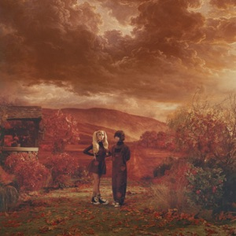
WHO ASKED?
DOMi & JD Beck
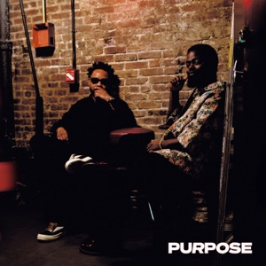
PURPOSE
Terrace Martin, Marcus Gilmore
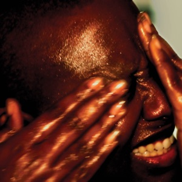
Oh Snap
Cécile McLorin Salvant

Fathers
Nate Smith, Kiefer, CARRTOONS, Kenny Beats
最佳傳統流行演唱
Best Traditional Pop Vocal Performance
A Couple Minutes
Olivia Dean
For Good
Cynthia Erivo, Ariana Grande
Madwoman
Laufey
I Hate The Way I Look Today.
RAYE
all that's left
Nicole Zuraitis, Gilad Hekselman
最佳傳統流行演唱專輯
Best Traditional Pop Vocal Album

Good Grief
Sara Bareilles
The Boys of Dungeon Lane
Paul McCartney
Better Broken
Sarah McLachlan

An Offering: Live at Speakeasy Studios
Leslie Odom, Jr.

Whatever's Clever!
Charlie Puth
最佳當代演奏專輯
Best Contemporary Instrumental Album

Monk Meditations
Jon Batiste

Lullaby for the Lost
Donny McCaslin
A Six String Odyssey
Six String Symphony
Somni
Snarky Puppy, Metropole Orkest, Jules Buckley

BaRcoDe
Ben Wendel
最佳音樂劇專輯
Best Musical Theater Album
CHESS the Musical
Nicholas Christopher, Hannah Cruz, Bradley Dean, Lea Michele, Bryce Pinkham, Aaron Tveit, Benny Andersson, Ludvig Andersson, Brian Usifer
製作名單
Nicholas Christopher, Hannah Cruz, Bradley Dean, Lea Michele, Bryce Pinkham & Aaron Tveit, principal vocalists; Benny Andersson, Ludvig Andersson & Brian Usifer, producers (Benny Andersson & Björn Ulvaeus, composers; Tim Rice, lyricist) (2025 Broadway Cast)

The Lost Boys
Shoshana Bean, LJ Benet, Ali Louis Bourzgui, Paul Alexander Nolan, Benjamin Pajak, Maria Wirries, Kyler England, Adrianne Gonzalez, Gabriel Mann, Ethan Popp
製作名單
Shoshana Bean, LJ Benet, Ali Louis Bourzgui, Paul Alexander Nolan, Benjamin Pajak & Maria Wirries, principal vocalists; Kyler England, Adrianne Gonzalez, Gabriel Mann & Ethan Popp, producers; Kyler England, Adrianne Gonzalez & Gabriel Mann, composers/lyricists (Original Broadway Cast)
Ragtime
Colin Donnell, Joshua Henry, Caissie Levy, Nichelle Lewis, Ben Levi Ross, Brandon Uranowitz, Lynn Ahrens, Sean Patrick Flahaven, Stephen Flaherty
製作名單
Colin Donnell, Joshua Henry, Caissie Levy, Nichelle Lewis, Ben Levi Ross & Brandon Uranowitz, principal vocalists; Lynn Ahrens, Sean Patrick Flahaven & Stephen Flaherty, producers (Stephen Flaherty, composer; Lynn Ahrens, lyricist) (2025 Broadway Cast)
Schmigadoon!
Alex Brightman, Sara Chase, Ana Gasteyer, Doug Besterman, David Chase, Cinco Paul, Scott M. Riesett
製作名單
Alex Brightman, Sara Chase & Ana Gasteyer, principal vocalists; Doug Besterman, David Chase, Cinco Paul & Scott M. Riesett, producers; Cinco Paul, composer & lyricist (Schmigadoon! Original Broadway Company)

Two Strangers (Carry A Cake Across New York)
Christiani Pitts, Sam Tutty, Jim Barne, Nick Finlow, Tim Jackson, Lux Pyramid, Kit Buchan
製作名單
Christiani Pitts & Sam Tutty, principal vocalists; Jim Barne, Nick Finlow, Tim Jackson & Lux Pyramid, producers; Jim Barne, composer; Kit Buchan, lyricist (Original Broadway Cast)
鄉村與美國根源音樂
Country & American Roots Music
15 個獎項最佳鄉村個人演出
Best Country Solo Performance

The Whole World
Vince Gill
Choosin' Texas
Ella Langley

Dry Spell
Kacey Musgraves

Can't Sit Still
Lainey Wilson
Gary
Stephen Wilson Jr.
最佳鄉村組合／團體演出
Best Country Duo/Group Performance

Butterfly
Zac Brown Band, Dolly Parton

Here
Mumford & Sons, Chris Stapleton
Horses and Divorces
Kacey Musgraves, Miranda Lambert
Light of a Clear Blue Morning
Dolly Parton, Lainey Wilson, Miley Cyrus, Queen Latifah, Reba McEntire

Phone, Keys, Wallet
Lainey Wilson, John Mayer
最佳鄉村歌曲
Best Country Song
Beautiful Things
Jessi Alexander, Jessie Jo Dillon, Connie Harrington, Megan Moroney
製作名單
Jessi Alexander, Jessie Jo Dillon, Connie Harrington & Megan Moroney, songwriters (Megan Moroney)
Choosin' Texas
Luke Dick, Miranda Lambert, Ella Langley, Joybeth Taylor
製作名單
Luke Dick, Miranda Lambert, Ella Langley & Joybeth Taylor, songwriters (Ella Langley)
Dry Spell
Luke Laird, Shane McAnally, Kacey Musgraves, Josh Osborne
製作名單
Luke Laird, Shane McAnally, Kacey Musgraves & Josh Osborne, songwriters (Kacey Musgraves)

Hardwired
Black Francis, Jesse Frasure, Adam Hood, Miranda Lambert, Stephen Wilson Jr.
製作名單
Black Francis, Jesse Frasure, Adam Hood, Miranda Lambert & Stephen Wilson Jr., songwriters (Stephen Wilson Jr.)
Phone, Keys, Wallet
Trannie Anderson, Jon Decious, Tom Hull, Summer Overstreet, Dan Pellarin, Dallas Wilson, Lainey Wilson
製作名單
Trannie Anderson, Jon Decious, Kid Harpoon, Summer Overstreet, Dan Pellarin, Dallas Wilson & Lainey Wilson, songwriters (Lainey Wilson, John Mayer)
最佳傳統鄉村專輯
Best Traditional Country Album

Clovis
Charley Crockett
50 Years From Home: Down At The Borderline
Vince Gill
Banks Of The Trinity
Cody Johnson

Workin' Man: Willie Sings Merle
Willie Nelson

Once Upon a Second Time Around
Charlie Worsham
最佳當代鄉村專輯
Best Contemporary Country Album

Mount Pleasant
Kelsea Ballerini

Cherry Valley
Carter Faith
Dandelion
Ella Langley
Cloud 9
Megan Moroney
Middle of Nowhere
Kacey Musgraves
最佳美國根源演出
Best American Roots Performance
Still Crying
Sara Bareilles

You Without Me
Brandi Carlile
Coyote
Chuck Leah

Human Mind
Mavis Staples

No Kings
Jesse Welles, Joan Baez
最佳美式民謠演出
Best Americana Performance
Heartland
Sara Bareilles

Returning To Myself
Brandi Carlile
Sad and Beautiful World
Mavis Staples
Mill Town Flood
Billy Strings

Masks Off
Jesse Welles
最佳美國根源歌曲
Best American Roots Song
Masks Off
Jesse Welles
製作名單
Jesse Welles, songwriter (Jesse Welles)

My Full Name
Madison Cunningham
製作名單
Madison Cunningham, songwriter (Madison Cunningham)
Returning To Myself
Brandi Carlile
製作名單
Brandi Carlile, songwriter (Brandi Carlile)
Tennessee Sunshine
Mary Dawood Catlin, Todd Catlin, Grant Maloy Smith
製作名單
Mary Dawood Catlin, Todd Catlin & Grant Maloy Smith, songwriters (Grant Maloy Smith)
Waist Deep
Zac Cockrell, Heath Fogg, Brittany Howard
製作名單
Zac Cockrell, Heath Fogg & Brittany Howard, songwriters (Alabama Shakes)
最佳美式民謠專輯
Best Americana Album
Returning To Myself
Brandi Carlile
Sad And Beautiful World
Mavis Staples

Future Soul
Tedeschi Trucks Band
Masks Off
Jesse Welles
World's Gone Wrong
Lucinda Williams
最佳藍草專輯
Best Bluegrass Album
Rattlin' Bones
Bronwyn Keith-Hynes
Safe, Sensible And Sane
Alison Brown, Steve Martin
Bluegrass Women
Lindsay Lou
So Much For Goodbyes
Billy Strings
Earl Jam 2
Tony Trischka
最佳傳統藍調專輯
Best Traditional Blues Album
Zydeco Trailrides and Southern Soul
Sean Ardoin And Kreole Rock And Soul, Mr. Sipp
B.B. King's Blues Summit 100
Joe Bonamassa

Morgan Freeman's Symphonic Blues Experience
Ground Zero Blues Club Band, Chineke! Orchestra, Martin Gellner

BLUES NOW
GA-20, Charlie Musselwhite

Slideways
Lil' Ed & The Blues Imperials
最佳當代藍調專輯
Best Contemporary Blues Album
Alive! (Live)
Fantastic Negrito
Paper Doll (Live)
Samantha Fish
Just Say Yes
Ruthie Foster

Hard Road
Christone "Kingfish" Ingram

The Breakdown
Keb'Mo'
最佳傳統民謠專輯
Best Traditional Folk Album
The Fiddle and the Drum
Renee Fleming, Béla Fleck
North Node
Brittany Haas
The Fiddle Funnel Sessions
E J Ouellette
Together Again
Tom Paxton, John McCutcheon

Under The Powerlines III (January 2025 - June 2025)
Jesse Welles
最佳當代民謠專輯
Best Contemporary Folk Album

Le Sigh
Kris Angelis
Ace
Madison Cunningham

The Great Divide: The Last Of The Bugs
Noah Kahan

Lost Cause Lover Fool
The Milk Carton Kids

Bloodline
Mon Rovîa
最佳地方根源音樂專輯
Best Regional Roots Music Album

Louisiana Love
Robin Barnes
Live at Tipitina's 2025
Dumpstaphunk
This Village
Ranky Tanky

Ain't No Dying
The Rumble Featuring Chief Joseph Boudreaux Jr.
Tongva Songs We Are Here Ekwa Chem
Tongva Ensemble, Connor Chee, Geneviève Gros-Louis
福音與當代基督教音樂
Gospel & Contemporary Christian Music
5 個獎項最佳福音演出／歌曲
Best Gospel Performance/Song
Thank You For Everything
Kirk Franklin, Karen Clark-Sheard
製作名單
Kirk Franklin, Karen Clark Sheard; Kirk Franklin, songwriter
Watches Over Me
Cory Henry, Hezekiah Walker, The Brent Fischer Orchestra
製作名單
Cory Henry Featuring Hezekiah Walker & The Brent Fischer Orchestra; Cory Henry, songwriter
Promises 2.0
Lisa Knowles-Smith & The Brown Singers
製作名單
Lisa Knowles-Smith & The Brown Singers
Mercy
PJ Morton
製作名單
PJ Morton; PJ Morton, songwriter

At The Cross
CeCe Winans
製作名單
CeCe Winans
最佳當代基督教音樂演出／歌曲
Best Contemporary Christian Music Performance/Song
God I'm Just Grateful
Elevation Worship, Chandler Moore, Ammo, Pat Barrett, Steven Furtick, Abubakar Baker Shariff-Farr
製作名單
Elevation Worship, Chandler Moore; Joshua Emanuel Coleman, Pat Barrett, Steven Furtick, Chandler Moore & Abubakar Baker Shariff-Farr, songwriters
Ale-luya Medley
Israel & New Breed, Kevin Camp, Nate Diaz, Israel Houghton, Angel Omar Martinez, Aaron Moses
製作名單
Israel & New Breed; Kevin Camp, Nate Diaz, Israel Houghton, Angel Omar Martinez & Aaron Moses, songwriters
The Jesus I Know Now
Brandon Lake, Lainey Wilson, Luke Laird, Emily Weisband
製作名單
Brandon Lake, Lainey Wilson; Luke Laird, Brandon Lake, Emily Weisband & Lainey Wilson, songwriters

Living Water
Lecrae, Miles Corayer, Jonah Glass, Lasanna Harris, Andrew "Lihtz" Howard, Joel McNeill, John McNeill
製作名單
Lecrae; Miles Corayer, Jonah Glass, Lasanna Harris, Andrew "Lihtz" Howard, Lecrae Moore, Joel McNeill & John McNeill, songwriters

Left It In The River
Jamie MacDonald, Jonathan Gamble, Colby Wedgeworth
製作名單
Jamie MacDonald; Jonathan Gamble, Jamie MacDonald & Colby Wedgeworth, songwriters
Worthy Of It All (Worthy)
CeCe Winans
製作名單
CeCe Winans
最佳福音專輯
Best Gospel Album
Devotion
Cory Henry
Revival: Live in Dallas
Lisa Knowles-Smith & The Brown Singers
Closer (Live In Chicago)
Jonathan McReynolds
Sunday Morning
PJ Morton
The Hymns
CeCe Winans
最佳當代基督教音樂專輯
Best Contemporary Christian Music Album

Shiloh
DOE
CORITOS Vol. 2
Israel & New Breed

KING OF HEARTS - IN THE ROOM!
Brandon Lake
Jamie MacDonald
Jamie MacDonald
Breathe On It
Tauren Wells
最佳根源福音專輯
Best Roots Gospel Album
Through The Fire
Jason Crabb

On A Different Note
Tim Lovelace
Light. Hope. Faith.
Cara Paige

A Fireside Christmas
Karen Peck & New River
Rise and Shine
Sunday Drive
拉丁、世界、非洲、雷鬼與新世紀
Latin, Global, African, Reggae & New Age, Ambient, Or Chant
11 個獎項最佳拉丁歌曲
Best Latin Song

Ahí
Drake, KAROL G, Kevyn Mauricio Cruz Moreno, Ovy On The Drums
製作名單
Aubrey Drake Graham, Carolina Giraldo Navarro, Kevyn Mauricio Cruz Moreno & Daniel Echavarría Oviedo, songwriters (KAROL G, Drake)
¿Cómo se ama?
Jorge Drexler
製作名單
Jorge Drexler, songwriter (Jorge Drexler)
Hasta Jesús Tuvo un Mal Día
Rafael Arcaute, Renee Barri, Catriel Guerreiro, Ulises Guerriero, Martin Kierszenbaum, John Ryan, Sting, Vicente Jimenez "Vibarco", Federico Vindver
製作名單
Rafa Arcaute, Renee Barri, Catriel Guerreiro, Ulises Guerriero, Martin Kierszenbaum, John Ryan, Gordon Matthew Thomas Sumner, Vicente Jimenez "Vibarco" & Federico Vindver, songwriters (CA7RIEL & Paco Amoroso, Sting)
La Perla
Noah Goldstein, David Rodriguez, ROSALÍA, Ryan Tedder, Dylan Wiggins
製作名單
Noah Goldstein, David Rodríguez, Rosalía Vila Tobella, Ryan Tedder & Dylan Wiggins, songwriters (ROSALÍA, Yahritza Y Su Esencia)

Niño
Santiago Alvarado, Mario Del Transito Cocomarola, Milo J, Gregorio Armando Reinaldo Nelli, Santiago Ruiz
製作名單
Santiago Alvarado, Mario Del Transito Cocomarola, Camilo Joaquín Villarruel, Gregorio Armando Reinaldo Nelli & Santiago Ruiz, songwriters (Milo J)
最佳拉丁流行專輯
Best Latin Pop Album
NO ME ARREPIENTO DE SENTIR TANTO
KAROL G
FEMME FATALE
Mon Laferte

MUDA
Carín León
¿Dónde Es El After?
Rawayana
Bendito Verano
Elena Rose
最佳拉丁都會專輯
Best Música Urbana Album
Cosa Nuestra: Capítulo 0
Rauw Alejandro
OMERTA
J Balvin, Ryan Castro

HOPI SENDÉ
Ryan Castro

OMAKASE
Alvaro Diaz

EL GREEN PRINT: La Saga (Disc 1) — FEID VS FERXXO
Feid
Do Not Disturb: Late Checkout
Young Miko
最佳拉丁搖滾或另類專輯
Best Latin Rock Or Alternative Album
FREE SPIRITS
Ca7riel & Paco Amoroso
Taracá
Jorge Drexler
La Vida Era Más Corta
Milo J
JuanesTeban
Juanes
Shine
Fito Paez
最佳墨西哥音樂專輯（含 Tejano）
Best Música Mexicana Album (Including Tejano)
LO QUE ME FALTA POR LLORAR
Grupo Frontera

Aunque Me Duela
Lupita Infante
La Madrina
Mari Nobre

DINASTÍA (DELUXE)
Peso Pluma, Tito Double P
¡VIDA MÉXICO!
Carlos Rivera
最佳熱帶拉丁專輯
Best Tropical Latin Album
País Portatil
Rubén Blades, Roberto Delgado

El Alma en Clave
Luis Enrique
Antes Que El Tiempo Se Vaya
Juan Fernando Fonseca
Más Que Palabras
Grupo Niche
El Último Disco Vol. 1
Carlos Vives
最佳世界音樂演出
Best Global Music Performance
Varuvaaiy
Devan Ekambaram, Susha

Una Flor En Cada Estrella
KerreKe, Mireya Ramos, Alex E. Chávez

Bando [Orchestral]
Angélique Kidjo, Pharrell Williams, Quavo
Porcelana
ROSALÍA, Dougie F

Dai Dai
Shakira, Burna Boy
最佳非洲音樂演出
Best African Music Performance

Gratitude
ASAKE
Aye Kan (Are You Coming Back?)
Angélique Kidjo, Ayra Starr

No Tradition, No Africa
King Ayisoba, Rocky Dawuni
Big Daddy
Tems

Jogodo
Wizkid, ASAKE
最佳世界音樂專輯
Best Global Music Album

EQUILIBRIVM
Anitta
Oriadé
Davido

HOPE!!
Angélique Kidjo
Starrgirl
Ayra Starr
Love Is A Kingdom
Tems
最佳雷鬼專輯
Best Reggae Album
Too Too Bad
Buju Banton

Exile
Chronixx

Brightside
Ziggy Marley

The Art of Acceptance
Protoje

SUPERNOVA
Runkus

Lottery
Shaggy
最佳新世紀、氛圍或頌歌專輯
Best New Age, Ambient, Or Chant Album

Night Music
Vicente Avella

Balance
Paul Avgerinos

Liminal
Brian Eno, Beatie Wolfe

Unspoken Psalms
Chris Redding

Tantrika
White Sun
兒童、喜劇、有聲書、影視與音樂影像
Children’s, Comedy, Audio Book Narration and Storytelling, Visual Media & Music Video/Film
9 個獎項最佳兒童音樂專輯
Best Children's Music Album

All in Good Time
Snooknuk
Hasta La Vista…Baby
Lucky Diaz And The Family Jam Band
Little Birdie's Big Symphony
Mark Hoying
Magnificent
Lachi

Starchild, Vol. 1
Divinity Roxx, Divi Roxx Kids
最佳喜劇專輯
Best Comedy Album
Good Girl
Nikki Glaser
Joy in The Trenches
Trevor Noah

Legacy
Wanda Sykes

100 Sound Effects
Fred Armisen

Take a Banana for the Ride
Jeff Ross

The Unstoppable...
Dave Chappelle
最佳有聲書、旁白與說故事錄音
Best Audio Book, Narration, and Storytelling Recording

Future Boy
Michael J. Fox

The Look
Michelle Obama
The Man on the Run
Paul McCartney, Morgan Neville

Remix Meditation
Lil Jon
Star of the Show: My Life on Stage
Dolly Parton
Vagabond: A Memoir
Tim Curry
最佳影視合輯原聲帶
Best Compilation Soundtrack For Visual Media
The Devil Wears Prada 2
Various Artists

Stranger Things Season 5
Various Artists
Wicked: For Good
Various Artists

The Wizard of Oz at Sphere
The Wizard of Oz at Sphere
Wuthering Heights
Charli xcx
最佳影視配樂原聲帶（含電影與電視）
Best Score Soundtrack For Visual Media (Includes Film And Television)

The Odyssey
Ludwig Goransson
製作名單
Ludwig Göransson, composer
One Battle After Another
Jonny Greenwood
製作名單
Jonny Greenwood, composer

Project Hail Mary
Daniel Pemberton
製作名單
Daniel Pemberton, composer
Star Wars: The Mandalorian and Grogu
Ludwig Goransson
製作名單
Ludwig Göransson, composer

Widow's Bay
David Fleming
製作名單
David Fleming, composer
最佳電玩與互動媒體配樂原聲帶
Best Score Soundtrack For Video Games and Other Interactive Media

Avatar: Frontiers of Pandora - From the Ashes
John Paesano
製作名單
John Paesano, composer

007: First Light
Joe Henson, Alexis Smith
製作名單
Joe Henson & Alexis Leon Smith, composers
Ghost of Yotei
Toma Otowa
製作名單
Toma Otowa, composer

Marvel's Wolverine
David Fleming
製作名單
David Fleming, composer
Star Wars: Zero Company
Gordy Haab
製作名單
Gordy Haab, composer
最佳影視歌曲
Best Song Written For Visual Media
House [From "Wuthering Heights"]
John Cale, Charli XCX
製作名單
John Cale & Charli xcx, songwriters (Charli xcx Featuring John Cale)
I Knew It, I Knew You [From "Toy Story 5"]
Jack Antonoff, Taylor Swift
製作名單
Jack Antonoff & Taylor Swift, songwriters (Taylor Swift)
Need Someone [From "The Pitt"]
Andrew Bird
製作名單
Andrew Bird, songwriter (Andrew Bird, Gavin Brivik)
No Place Like Home [From "Wicked: For Good"]
Stephen Schwartz
製作名單
Stephen Schwartz, songwriter (Cynthia Erivo)
RUNWAY [From "The Devil Wears Prada 2"]
Cirkut, Doechii, Dernst Emile II, Lady Gaga, Jayda Love, Bruno Mars, Andrew Watt
製作名單
Henry Walter, Jaylah Hickmon, Dernst "D'Mile" Emile II, Stefani Germanotta, Jayda Love, Bruno Mars & Andrew Watt, songwriters (Lady Gaga, Doechii)
最佳音樂錄影帶
Best Music Video
Lost Boys
Phoebe Bridgers
製作名單
Lance Oppenheim & Pablo Rochat, video directors; Pierre Moulène & Christian Vazquez, video producers

STORM
GENER8ION, Yung Lean
製作名單
Romain Gavras, video director; Nicolas Galoux, Guillaume Le Gat & Maeva Tenneroni, video producers
hate that i made you love me
Ariana Grande
製作名單
Christian Breslauer, video director; Mike Breslauer, Andrew Lerios & Luga Podesta, video producers
Click Clack Symphony.
RAYE
製作名單
Dave Meyers, video director; Maggie Curwin, video producer
Berghain
ROSALÍA
製作名單
Nicolas Mendez, video director; Alba Barneda & Maria Rubio, video producers
最佳音樂影片
Best Music Film

To Be Celestial vs. That's the Weight of the World
Earth, Wind & Fire
製作名單
Ahmir "Questlove" Thompson, video director; Samantha Grogin, Ahmir "Questlove" Thompson, Arron Saxe, Dave Sirulnick & KB White, video producers

Hit Me Hard and Soft: The Tour Live
Billie Eilish
製作名單
James Cameron & Billie Eilish, video directors; Michelle An, Maggie Baird, Steve Berman, John Brooks, Geoff Burdick, James Cameron, Paul Clarke, Chelsea Dodson, Billie Eilish, John Janick, Justin Lubliner, Jason Owen & Maria Wilhelm, video producers

Man on the Run
Paul McCartney
製作名單
Morgan Neville, video director; Michele Anthony, David Blackman, Ben Chappell, Morgan Neville, Scott Rodger, Chloe Simmons & Meghan Walsh, video producers

EPiC: Elvis Presley in Concert
Baz Luhrmann, Jeremy Castro, Matthew Gross, Colin Smeeton, Schuyler Weiss
製作名單
Baz Luhrmann, video director; Jeremy Castro, Matthew Gross, Baz Luhrmann, Colin Smeeton & Schuyler Weiss, video producers

Lilith Fair: Building a Mystery – The Untold Story
Ally Pankiw, Dan Levy, Christina Piovesan
製作名單
Ally Pankiw, video director; Dan Levy & Christina Piovesan, video producers
包裝、解說與歷史專輯
Package, Notes & Historical
4 個獎項最佳唱片包裝
Best Recording Package

Coloring Book
Alec Longstreth, Joe Spinelli
製作名單
Alec Longstreth & Joe Spinelli, art directors (Weezer)

Horizons / West
Jordan Butcher
製作名單
Jordan Butcher, art director (Thrice)

If You Can Hold Your Breath
Farbod Kokabi
製作名單
Farbod Kokabi, art director (Karate)

Nothing's About to Happen to Me
Mary Banas, Marc Burkhardt, Mitski Miyawaki
製作名單
Mary Banas, Marc Burkhardt & Mitski Miyawaki, art directors (Mitski)
Power To The People
Simon Hilton, Liz Hirsch, Sean Ono Lennon
製作名單
Simon Hilton, Liz Hirsch & Sean Ono Lennon, art directors (John Lennon & Yoko Ono/Plastic Ono Band with Elephant’s Memory and Special Guests)
最佳專輯封面
Best Album Cover
God Gotta Afro & Gold Hoops
Patso Dimitrov, Darin Gilliam
製作名單
Patso Dimitrov & Darin Gilliam, art directors (Rapsody)
Sad And Beautiful World
Lauren N. Bailey, Trevor Hernandez, Elizabeth De La Piedra
製作名單
Lauren N. Bailey, Trevor Hernandez & Elizabeth De La Piedra, art directors (Mavis Staples)

This Mirror Weighs a Ton
Nick Steinhardt, Addie Wagenknecht
製作名單
Nick Steinhardt & Addie Wagenknecht, art directors (Interpol)

West End Girl
Leith Clark, Nieves González
製作名單
Leith Clark & Nieves González, art directors (Lily Allen)
WHAT HAPPENED TO THE STREETS?
Tina Ibañez
製作名單
Tina Ibañez, art director (21 Savage)
最佳專輯解說
Best Album Notes

Clifton Chenier: King of Louisiana Blues & Zydeco
Adam Machado
製作名單
Adam Machado, album notes writer (Clifton Chenier)

Guglielmi: Amalia e Carlo (Live)
Mitchell Hutchings
製作名單
Mitchell Hutchings, album notes writer (Florida Atlantic University Opera Theatre)
Haydn: The Complete Decca Recordings
Dominic Fyfe
製作名單
Dominic Fyfe, album notes writer (Antal Dorati)
Mother of the Blues: The Complete Paramount Recordings, 1923-1928
David Sager
製作名單
David Sager, album notes writer (Ma Rainey)

Pisces, Aquarius, Capricorn & Jones Ltd. (Super Deluxe Edition)
Andrew Sandoval
製作名單
Andrew Sandoval, album notes writer (The Monkees)
最佳歷史專輯
Best Historical Album

The Bootleg Series Vol. 18: Through The Open Window, 1956-1963
Steve Berkowitz, Sean Wilentz, Steve Addabbo, Michael Piacentini
製作名單
Steve Berkowitz & Sean Wilentz, compilation producers; Steve Addabbo & Michael Piacentini, mastering engineers; Steve Addabbo & Michael Piacentini, restoration engineers (Bob Dylan)
Classic V-Disc Big Band Jazz Sessions Limited Edition Box Set
Scott Wenzel, Shane Carroll, Nancy Conforti
製作名單
Scott Wenzel, compilation producer; Shane Carroll & Nancy Conforti, mastering engineers (Various Artists)
Clifton Chenier: King of Louisiana Blues & Zydeco
Adam Machado, Jessica Thompson
製作名單
Adam Machado, compilation producer; Jessica Thompson, mastering engineer; Jessica Thompson, restoration engineer (Clifton Chenier)
Ma Rainey: Mother Of The Blues, The Complete Paramount Recordings 1923-1928
Lars Edegran, Doug Benson
製作名單
Lars Edegran, compilation producer; Doug Benson, mastering engineer; Doug Benson, restoration engineer (Ma Rainey)
Polish Radio Sessions 1970-1991
Adam Domagala, Jacek Gawlowski
製作名單
Adam Domagala, compilation producer; Jacek Gawlowski, mastering engineer; Jacek Gawlowski, restoration engineer (Tomasz Stanko)
製作、工程、作曲與編曲
Production, Engineering, Composition & Arrangement
7 個獎項最佳錄音工程專輯（非古典）
Best Engineered Album, Non-Classical
The Art of Loving
Julian Bunetta, Austin Christy, Dan Ewins, Jeff Gunnell, Charlie Holmes, Zach Nahome, John Ryan, Jan Trafas, Max Wolfgang, Matt Zara, Simon Francis
製作名單
Julian Bunetta, Austin Christy, Dan Ewins, Jeff Gunnell, Charlie Holmes, Zach Nahome, John Ryan, Jan Trafas, Max Wolfgang & Matt Zara, engineers; Simon Francis, mastering engineer (Olivia Dean)
LUX (Complete Works)
Daniel Cayotte, Isaac Diskin, Tom Elmhirst, Nigel Godrich, Tristan Hoogland, Mike Larson, Manny Marroquin, Jake Miller, Joaquim Monte, Alberto Pérez, Billy Ray, David Rodriguez, Marta Salogni, Bergur Thorisson, Harry Wilson, Bob Jackson, Brian Lee
製作名單
Daniel Cayotte, Isaac Diskin, Tom Elmhirst, Nigel Godrich, Tristan Hoogland, Mike Larson, Manny Marroquin, Jake Miller, Joaquim Monte, Alberto Pérez, Billy Ray, David Rodríguez, Marta Salogni, Bergur Thorisson & Harry Wilson, engineers; Bob Jackson & Brian Lee, mastering engineers (ROSALÍA)
Middle of Nowhere
Bryce Bordone, Serban Ghenea, Konrad Snyder, Mike Stankiewicz, Adam Grover
製作名單
Bryce Bordone, Serban Ghenea, Konrad Snyder & Mike Stankiewicz, engineers; Adam Grover, mastering engineer (Kacey Musgraves)

Nine Inch Noize
Boys Noize, Jacob Moreno, Trent Reznor, Atticus Ross
製作名單
Boys Noize, Jacob Moreno, Trent Reznor & Atticus Ross, engineers; Boys Noize, Jacob Moreno, Trent Reznor & Atticus Ross, mastering engineers (Nine Inch Nails, Boys Noize)
The Thread
Joe Dougherty, Chris Greatti, Mitch McCarthy, Adam Schoeller, Willow Smith, Nathan Dantzler
製作名單
Joe Dougherty, Chris Greatti, Mitch McCarthy, Adam Schoeller & Willow Smith, engineers; Nathan Dantzler, mastering engineer (WILLOW)
最佳錄音工程專輯（古典）
Best Engineered Album, Classical
Akiho: Beneath Lighted Coffers & Concerto for Steel Pans & Orchestra
Mark Donahue
製作名單
Mark Donahue, engineer; Mark Donahue, mastering engineer (Andy Akiho, David Danzmayr & Oregon Symphony)
Dvorák: Symphony No. 9, 'From the New World'; Simon: Four Black American Dances
Mark Donahue
製作名單
Mark Donahue, engineer; Mark Donahue, mastering engineer (Manfred Honeck & Pittsburgh Symphony Orchestra)

Mahler: Symphony No. 2 'Resurrection'
Jon Johannsen, Jason O'Connell, Mark Willsher
製作名單
Jon Johannsen, Jason O'Connell & Mark Willsher, engineers; Mark Willsher, mastering engineer (Esa-Pekka Salonen & San Francisco Symphony)

Puts: Emily - No Prisoner Be
Silas Brown
製作名單
Silas Brown, engineer; Silas Brown, mastering engineer (Joyce DiDonato & Time For Three)
Sarah Kirkland Snider: Forward Into Light
Silas Brown, Wellington Gordon, Charles Mueller, Doron Schachter, Ryan Streber, Mike Tierney
製作名單
Silas Brown, Wellington Gordon, Charles Mueller, Doron Schachter, Ryan Streber & Mike Tierney, engineers; Silas Brown, mastering engineer (Andrew Cyr & Metropolis Ensemble)

Ustvolskaya: Symphony No. 5; Poulenc: La Voix Humaine
Gintas Norvila, Jennifer Nulsen
製作名單
Gintas Norvila, engineer; Jennifer Nulsen, mastering engineer (Franz Welser-Möst & The Cleveland Orchestra)
年度製作人（古典）
Producer Of The Year, Classical
Blanton Alspaugh
製作名單
• Akiho: Beneath Lighted Coffers (Andy Akiho, David Danzmayr & Oregon Symphony) (A)
• Barber: Vanessa (Gianandrea Noseda, J'Nai Bridges, Nicole Heaston, Thomas Hampson, Susan Graham, Matthew Polenzani & National Symphony Orchestra) (A)
• Mahler: Symphony No. 7 (Gianandrea Noseda & National Symphony Orchestra) (A)
• Mazzoli: Breaking the Waves (Patrick Summers, Lauren Snouffer, Ryan McKinny & Houston Grand Opera) (A)
• Orff: Carmina Burana (Jader Bignamini, Audivi, Detroit Opera Youth Chorus & Detroit Symphony Orchestra) (A)
• Roots & Rivers (Joshua Habermann & Santa Fe Desert Chorale) (A)
• Schubert: Lieder (Clara Osowski) (A)
• Song Offerings - Choral Works By Christopher Tin (Christopher Tin, Joel Rinsema & Kantorei) (A)Silas Brown
製作名單
• Hold These Truths (Lara Downes, 9 Horses & Invoke) (A)
• Hourglass (Simone Dinnerstein & Baroklyn) (A)
• Lamenting Earth (Nicholas Phan, Myra Huang & Jasper String Quartet) (A)
• Last (Siwoo Kim & East Coast Chamber Orchestra) (A)
• Puts: Emily - No Prisoner Be (Joyce DiDonato & Time For Three) (A)
• Renewal - Music Of Viet Cuong (David Alan Miller, Sandbox Percussion & Albany Symphony) (A)
• Rise (Imani Winds) (A)
• Sarah Kirkland Snider: Forward Into Light (Andrew Cyr & Metropolis Ensemble) (A)Dmitriy Lipay
製作名單
• Alma Y Fuego (Gustavo Dudamel & Simón Bolívar Symphony Orchestra Of Venezuela) (A)
• The Art Of Transcription (Alexander Lipay & Fanya Lin) (A)
• Chen: Iris Dévoilée And L'Éloignement (Xian Zhang & Seattle Symphony) (A)
• Cipullo: The Dialogue Of Memories (Alastair Willis, Megan Marino, Dominic Armstrong, Daniel Belcher & Music of Remembrance) (A)
• Pájaros Mágicos (Gustavo Dudamel & Los Angeles Philharmonic) (A)Elaine L. Martone
製作名單
• Allison Loggins-Hull: The Cleveland Residency (Franz Welser-Möst & The Cleveland Orchestra) (A)
• Black Being (Flutronix) (A)
• Brouhaha - Shaped by Fire (Maiani da Silva) (A)
• Harlem Renaissance (John Morris Russell & Cincinnati Pops Orchestra) (A)
• Mendelssohn: String Quartets Op. 12 & 13 (Verona Quartet) (A)
• Patchwork (Allison Loggins-Hull) (A)
• Soler! (Gerardo Teissonnière) (A)
• Ustvolskaya: Symphony No. 5; Poulenc: La Voix Humaine (Franz Welser-Möst & The Cleveland Orchestra) (A)
• Verdi: Requiem (Franz Welser-Möst, Lisa Wong, The Cleveland Orchestra & Chorus) (A)Dirk Sobotka
製作名單
• Bruckner: Symphony No. 4 (Nathalie Stutzmann & Atlanta Symphony Orchestra) (A)
• Dvorák: Symphony No. 9, 'From the New World'; Simon: Four Black American Dances (Manfred Honeck & Pittsburgh Symphony Orchestra) (A)
• Wagner: Der Ring Des Nibelungen (Fabio Luisi, Mark Delavan, Štefan Margita, Deniz Uzun, Laura Wilde, Jamez McCorkle, Hunter Enoch, Tamara Mumford & Dallas Symphony Orchestra) (A)
最佳沉浸式音訊專輯
Best Immersive Audio Album

Captain Fantastic And The Brown Dirt Cowboy (50th Anniversary Edition)
Greg Penny
製作名單
Greg Penny, immersive mix engineer; Greg Penny, immersive producer (Elton John)
Ghost of Yotei (Original Soundtrack)
Eric Schilling, Kellogg Boynton, Keith Leary, Peter Scaturro, Herbert Waltl
製作名單
Eric Schilling, immersive mix engineer; Kellogg Boynton, Keith Leary, Peter Scaturro & Herbert Waltl, immersive producers (Toma Otowa)
The Grotesque & The Sublime
Daniel Shores
製作名單
Daniel Shores, immersive mix engineer; Daniel Shores, immersive mastering engineer (Iceland Symphony Orchestra)
One Size Fits All
Karma Auger, Erich Gobel, Joe Travers
製作名單
Karma Auger & Erich Gobel, immersive mix engineers; Joe Travers, immersive producer (Frank Zappa, The Mothers Of Invention)
petal
John Hanes
製作名單
John Hanes, immersive mix engineer (Ariana Grande)
最佳器樂作曲
Best Instrumental Composition

ÉPiLOGUE
JD Beck, Noé Degalle, DOMi
製作名單
JD BECK, Noé Degalle & DOMi LOUNA, composers (DOMi & JD BECK)

Found in a Frozen Fog
Chris Eldridge, Brittany Haas, Paul Kowert, Noam Pikelny, Chris Thile
製作名單
Chris Eldridge, Brittany Haas, Paul Kowert, Noam Pikelny & Chris Thile, composers (Punch Brothers)

King of Coins
ARKAI, Lindsey Stirling
製作名單
ARKAI & Lindsey Stirling, composers (ARKAI & Lindsey Stirling)
listen… (from Disclosure Day)
John Williams
製作名單
John Williams, composer (John Williams)
Solace (Compassion)
Kathryn Bostic
製作名單
Kathryn Bostic, composer (Andreas Graf, London Symphony Orchestra & Ben Palmer)
最佳器樂或無伴奏合唱編曲
Best Arrangement, Instrumental Or A Cappella
Blackbird
Ben Bram, Blake Farfan
製作名單
Ben Bram & Blake Farfan, arrangers (New York Vocal Collective)
Olha Maria
Ben Wendel
製作名單
Ben Wendel, arranger (Ben Wendel)
Overjoyed (Live)
Chick Corea
製作名單
Chick Corea, arranger (Chick Corea)

Radio Newsreel
John Powell
製作名單
John Powell, arranger (John Powell)

Sir Duke
Michael Mayo
製作名單
Michael Mayo, arranger (Kings Return)
最佳器樂與人聲編曲
Best Arrangement, Instruments And Vocals
Click Clack Symphony.
Hendric Buenck, Russell Emanuel, RAYE, Mike Sabath, Hans Zimmer
製作名單
Hendric Buenck, Russell Emanuel, Rachel Keen, Mike Sabath & Hans Zimmer, arrangers (RAYE Featuring Hans Zimmer)
The Governor's Waltz
Phoebe Bridgers, Christian Lee Hutson, Rob Moose, Caroline Shaw
製作名單
Phoebe Bridgers, Christian Lee Hutson, Rob Moose & Caroline Shaw, arrangers (Phoebe Bridgers)

Moon River
Nan Schwartz
製作名單
Nan Schwartz, arranger (Studio Intensive Orchestra Featuring Nnenna Freelon)
Send in the Clowns
Darcy James Argue
製作名單
Darcy James Argue, arranger (Cécile McLorin Salvant, Metropole Orkest & Jules Buckley)
Shrink To Fantasy
Chris Greatti, Zach Tenorio, Willow Smith
製作名單
Chris Greatti, Zach Tenorio & Willow Smith, arrangers (WILLOW)
SMALL EYES
JD Beck, Noé Degalle, DOMi
製作名單
JD BECK, Noé Degalle & DOMi LOUNA, arrangers (DOMi & JD BECK)
古典
Classical
8 個獎項最佳管弦樂演出
Best Orchestral Performance
An American Dream?
Barbara Hannigan
製作名單
Barbara Hannigan, conductor (Gothenburg Symphony Orchestra)
Clyne: Color Field
Marin Alsop
製作名單
Marin Alsop, conductor (Baltimore Symphony Orchestra)
Cuong: Orbital
David Alan Miller
製作名單
David Alan Miller, conductor (Albany Symphony)

John Williams And 'The President's Own,' Vol. 3
John Williams
製作名單
John Williams, conductor (United States Marine Band)
Pájaros Mágicos
Gustavo Dudamel
製作名單
Gustavo Dudamel, conductor (Los Angeles Philharmonic)
最佳歌劇錄音
Best Opera Recording

Barber: Vanessa
Gianandrea Noseda, J'Nai Bridges, Susan Graham, Thomas Hampson, Nicole Heaston, Matthew Polenzani, Blanton Alspaugh
製作名單
Gianandrea Noseda, conductor; J'Nai Bridges, Susan Graham, Thomas Hampson, Nicole Heaston & Matthew Polenzani; Blanton Alspaugh, producer (National Symphony Orchestra; University of Maryland Concert Choir)

Bates: The Amazing Adventures Of Kavalier & Clay
Yannick Nézet-Séguin, Patrick Carfizzi, Craig Colclough, Andrzej Filończyk, Miles Mykkanen, Edward Nelson, Sun-Ly Pierce, Lauren Snouffer, David Frost
製作名單
Yannick Nézet-Séguin, conductor; Patrick Carfizzi, Craig Colclough, Andrzej Filonczyk, Miles Mykkanen, Edward Nelson, Sun-Ly Pierce & Lauren Snouffer; David Frost, producer (The Metropolitan Opera Orchestra; The Metropolitan Opera Chorus; Gene Scheer)

Davis: The Central Park Five
Anthony Parnther, Lacey Jo Benter, Cedric Berry, Ashley Faatoalia, Orson Van Gay, Bernard Holcomb, William Powell, Justin Ryan, Greg Curtis, Anthony Davis
製作名單
Anthony Parnther, conductor; Lacey Jo Benter, Cedric Berry, Ashley Faatoalia, Orson Van Gay, Bernard Holcomb, William Powell, III & Justin Ryan; Greg Curtis, Anthony Davis & Anthony Parnther, producers (Long Beach Opera; Richard Wesley)
Little: What Belongs To You
Alan Pierson, Karim Sulayman, Gavin Chuck, Andrew McKenna Lee, David T. Little
製作名單
Alan Pierson, conductor; Karim Sulayman; Gavin Chuck, Andrew McKenna Lee & David T. Little, producers (Alarm Will Sound)

Mazzoli: Breaking The Waves
Patrick Summers, Ryan McKinny, Lauren Snouffer, Blanton Alspaugh
製作名單
Patrick Summers, conductor; Ryan McKinny & Lauren Snouffer; Blanton Alspaugh, producer (Houston Grand Opera Orchestra; Houston Grand Opera Chorus; Royce Vavrek)
最佳合唱演出
Best Choral Performance
Hearne: Farming
Donald Nally
製作名單
Donald Nally, conductor (The Crossing)
Here I Am
Eric Holtan
製作名單
Eric Holtan, conductor (Susanna Phillips; True Concord Orchestra; True Concord Voices & Tucson Girls Chorus)
Hopkins: My Fatherland
Gustavo Dudamel
製作名單
Gustavo Dudamel, conductor (Gregorio Nieto; Philharmonia Orchestra; The Bach Choir & Boy Choristers of Winchester Cathedral)
Talbot: Piedra De Sol (Sunstone)
Craig Hella Johnson
製作名單
Craig Hella Johnson, conductor (Conspirare)
Yee: Trans Requiem
Melissa Attebury
製作名單
Melissa Attebury, conductor (Katherine Goforth, Breanna Sinclairé & Andrew Yee; Novus NY; Trinity Choir & Trinity Youth Chorus)
最佳室內樂／小型合奏演出
Best Chamber Music/Small Ensemble Performance

Bridgetower Project - Beethoven, Florence Price, Paquito D'Rivera
Ilya Kaler, Rasa Vitauskaite
製作名單
Ilya Kaler & Rasa Vitauskaite
In Her Hands
Neave Trio
製作名單
Neave Trio
Kouyoumdjian: Paper Pianos
Alan Pierson, Alarm Will Sound
製作名單
Alan Pierson & Alarm Will Sound
Puts: Emily - No Prisoner Be
Joyce DiDonato, Time For Three
製作名單
Joyce DiDonato & Time For Three

Rhythm Nation
PUBLIQuartet
製作名單
PUBLIQuartet
最佳古典器樂獨奏
Best Classical Instrumental Solo
Akiho: Beneath Lighted Coffers & Concerto For Steel Pans & Orchestra
Andy Akiho, David Danzmayr
製作名單
Andy Akiho; David Danzmayr, conductor (Oregon Symphony)
Cuong: Re(new)al
Sandbox Percussion, David Alan Miller
製作名單
Sandbox Percussion; David Alan Miller, conductor (Albany Symphony)
Rubinstein: Piano Sonatas Nos. 3 & 4
Han Chen
製作名單
Han Chen

Stewart: 24 American Caprices
Curtis Stewart
製作名單
Curtis Stewart

Thompson: Breathe/Burn: An Elegy
Yo-Yo Ma, Michael Stern
製作名單
Yo-Yo Ma; Michael Stern, conductor (Kansas City Symphony)
最佳古典獨唱專輯
Best Classical Solo Vocal Album
Lamenting Earth
Nicholas Phan, Myra Huang, Jasper String Quartet
製作名單
Nicholas Phan, soloist; Myra Huang, pianist; Jasper String Quartet, artists

Legends: Rebellion
Laura Strickling, Joy Schreier
製作名單
Laura Strickling, soloist; Joy Schreier, pianist
The Living Spiritual
Kenneth Overton, Elizabeth Hill
製作名單
Kenneth Overton, soloist; Elizabeth Hill, pianist
Over My Head
John Michael Holiday, Kevin J. Miller
製作名單
John Holiday, soloist; Kevin Miller, pianist
Solitude
Reginald Mobley, Brandon J. Acker, Douglas Balliett
製作名單
Reginald Mobley, soloist; Brandon J. Acker & Douglas Balliett, artists
最佳古典合輯
Best Classical Compendium

Black Mozart
Jon Batiste
製作名單
Jon Batiste; Jon Batiste, producer
My Brother's Keeper
Steven Blier, Joshua Blue, Will Liverman, Joseph Parrish, Alan Williams, Chaz'men Williams-Ali, Jorell Williams, Justin Austin, Jonathan Estabrooks
製作名單
Steven Blier, Joshua Blue, Will Liverman, Joseph Parrish, Alan Williams, Chaz'men Williams-Ali & Jorell Williams; Justin Austin, Steven Blier & Jonathan Estabrooks, producers
Renewal - Music Of Viet Cuong
David Alan Miller, Jonathan Allen, Silas Brown, Victor Caccese, Viet Cuong, Ian Rosenbaum, Terry Sweeney
製作名單
Sandbox Percussion; David Alan Miller, conductor; Jonathan Allen, Silas Brown, Victor Caccese, Viet Cuong, Ian Rosenbaum & Terry Sweeney, producers

Rise
Imani Winds, Silas Brown, Doron Schachter
製作名單
Imani Winds; Silas Brown, Mark Dover & Doron Schachter, producers
25x25
Eric Cha-Beach, Matt Poirier, Josh Quillen, Adam Sliwinski, Jason Treuting
製作名單
So Percussion; Eric Cha-Beach, Matt Poirier, Josh Quillen, Adam Sliwinski & Jason Treuting, producers
最佳當代古典作曲
Best Contemporary Classical Composition
Bates: The Amazing Adventures Of Kavalier & Clay
Mason Bates
製作名單
Mason Bates, composer (Yannick Nézet-Séguin, Lauren Snouffer, Andrzej Filonczyk, Craig Colclough, Miles Mykkanen, Patrick Carfizzi, Edward Nelson, Sun-Ly Pierce & The Metropolitan Opera)
Davis: The Central Park Five
Anthony Davis
製作名單
Anthony Davis, composer (Anthony Parnther, Lacey Jo Benter, Bernard Holcomb, Orson Van Gay, Ashley Faatoalia, Cedric Berry, William Powell, III & Justin Ryan)
Dennehy: Violin Concerto
Donnacha Dennehy
製作名單
Donnacha Dennehy, composer (Stephen Waarts, Ryan McAdams & National Symphony Orchestra Ireland)
Snider: Forward Into Light
Sarah Kirkland Snider
製作名單
Sarah Kirkland Snider, composer (Andrew Cyr & Metropolis Ensemble)
Stewart, C.: 24 American Caprices
Curtis Stewart
製作名單
Curtis Stewart, composer (Curtis Stewart)
找不到符合的入圍作品，換個關鍵字試試。